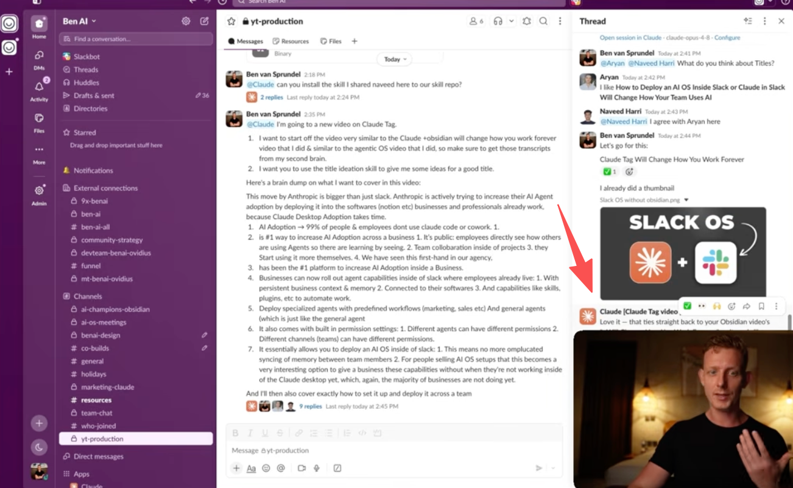
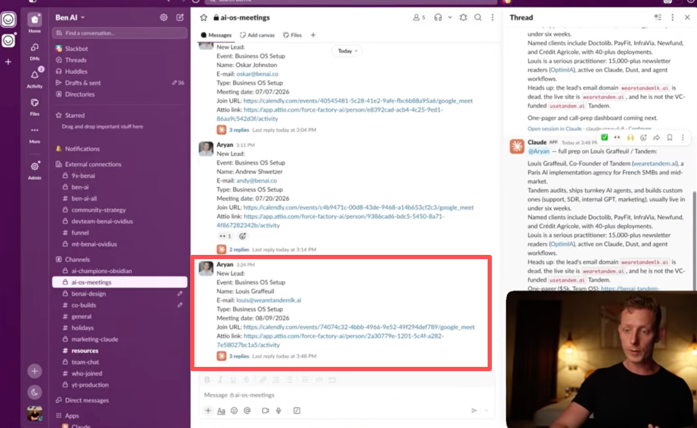
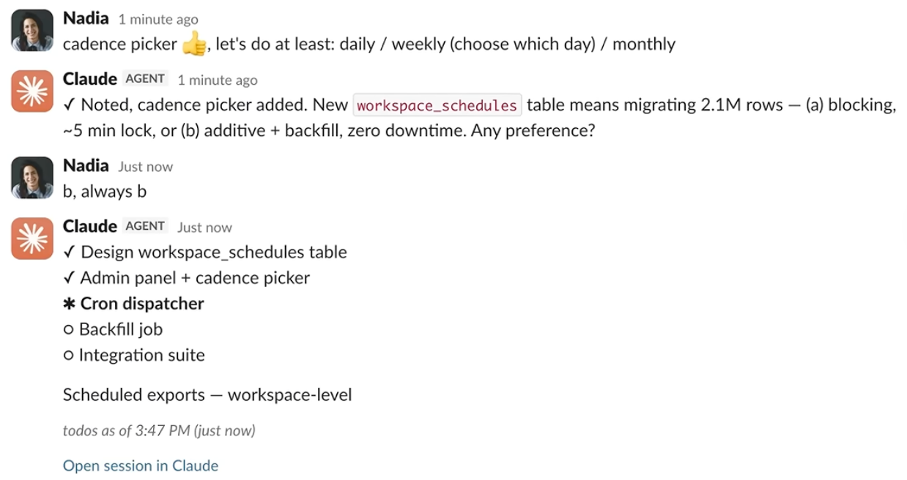
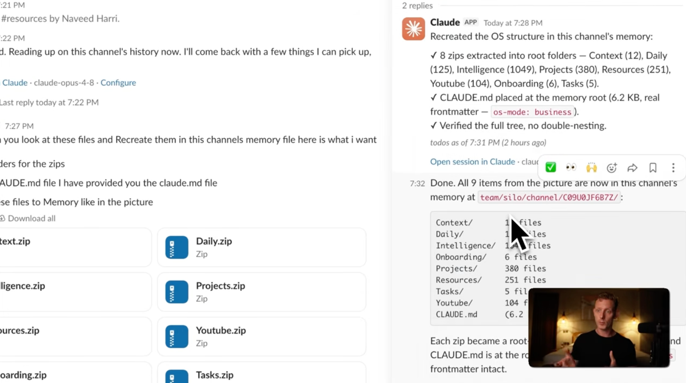
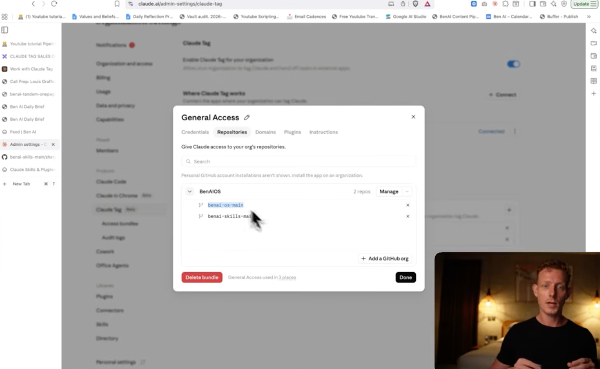
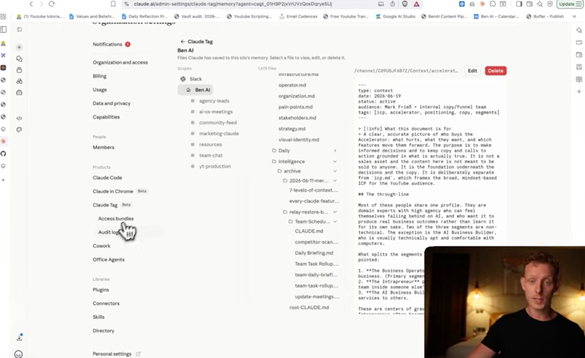

Anthropic 把 Claude 从"你打开的对话框"变成"住在团队频道里的一名同事"。本报告拆解它的产品定位、典型场景、核心功能与运转逻辑、两个亮点能力，以及对工作流的改变，并落到对元宝派的启示。
Claude Tag 的定位不是"更好用的聊天机器人"，而是把 AI 重新安放进团队的位置——一个有工作账号、有持续记忆、被全频道共享、能主动干活的数字同事。换个更技术的角度说，它是「把 Claude Code 的全部能力（Skills / plugins / connectors / Memory / 任务调度）整体搬进 Slack」，再叠加多人共享与主动性。它取代旧的「Claude in Slack」（旧版仅一对一、只看最近 20 条消息），2026-08-03 退役。
同一频道只有一个 Claude，全员同一身份。每个人都看得到它在做什么，能接力上一个人的对话——像共事，不是私聊。也顺带把非技术员工的使用门槛降到最低。
长期参与频道会积累隐性上下文，不用每次从零解释背景；获授权后可跨频道、跨数据源学习。对比旧版只看最近 20 条。
设一次常驻规则，它就能不被 @ 也主动跟进、补位、提醒——但主动被规则圈定，可控可关（详见第 4 节）。
派完活你去忙别的；它能给自己排后续任务，跨小时甚至跨天持续推进项目。Anthropic 内部"并行委派多个 Claude"已多于亲自执行。
Claude Tag 覆盖工程/研发、数据运营/GTM、跨团队协作三大类场景。下面以两段视频里的真实画面为据，用表格汇总——官方演示偏"团队协作全景"，第三方实测偏"实操细节"（配置类截图详见第 3 章，记忆/知识库详见第 4.2 节）。
来源：youtube.com/watch?v=VojDzHaciKQ
| 场景 | 一句话说明 | 截图 | 片段 |
|---|---|---|---|
| 工程 · PR 自动提交 | 工程群 @Claude 讨论"定时导出"功能，它随决策变化重新规划、定位代码库、开 PR 并合并。内部 65% 产品 PR 由 Claude 开启。 | 00:38 | |
| 跨团队 · 文档自动编辑 | 凭长期记忆判断"新功能影响营销发布"，在 #launch 主动提醒，并自动更新博客/邀请邮件/功能表，无需人工开 Drive。 | 01:17 | |
| 法务 · 频道权限隔离 | 独立账号 + per-channel 权限：#legal 看合同、#eng 改代码；在 #legal 要它改代码则被拒——边界清晰保安全。 | 01:39 |
来源：《Claude Tag + Slack…》 · watch?v=_cdX8xkKj_s（可信度高于营销页但非官方口径，实现细节以官方文档为准）
| 场景 | 一句话说明 | 截图 | 片段 |
|---|---|---|---|
| 调用高级功能 | 像在 Claude Code 里一样用技能/插件/连接器。例：调"标题构思"技能，读过往视频转录出新标题与钩子。 | 01:13 | |
| 多人协作模式 | 打破单人用 AI 的信息孤岛：全员在同一频道共同交互、随时补想法，非技术员工"看别人用"即可上手。 | —（交互模式） | 02:00 |
| 频道专属定制 Agent | 给频道绑定预设工作流的智能体（频道↔Access bundle）。例：营销频道一句话把最新视频改写成 LinkedIn 帖。后台配置见 §3 | 03:00 | |
| Access bundle 配置 | 可下拉选/新建的权限包（bundle ≈ profile），含 Credentials/Repositories/Domains/Plugins/Instructions 五类——即"能用什么 + 怎么行为"。 | — | |
| GitHub 深度集成 | 官方仅内置默认插件；自定义技能/知识库需在 GitHub 建仓、在 bundle 的 Repositories 页连接，实现跨工具同步。 | 10:27 |
一张表看清 Claude Tag 有哪些能力、各自撑起第 2 章哪类场景、以及哪些是第 4 章要深挖的亮点。★ = 亮点能力。
| 能力 | 一句话 | 支撑的场景 |
|---|---|---|
| @ 派活 + 执行清单 | 自然语言派活、拆阶段执行、thread 内实时贴清单、全员可见可接力 | 工程开发 / Catch up |
| 技能 · 插件 · 连接器 | 官方插件内置；自定义技能经 GitHub 建仓再绑定；连接器接 Datadog/Calendly/Apify 等 | 标题构思 / 线索研究 / 营销改写 |
| 身份与权限 | 服务账号身份、权限"跟频道走"、按 scope 配 Access bundle（含能否读全局记忆的开关） | 法务/工程权限隔离 |
| ★ 主动 routine | 定时 / 频道监听 / 事件触发，自然语言设定、可见可关——"可控的主动" | 销售自动背调 / 每日简报 |
| ★ 持续记忆 · 第二大脑 | 频道级+工作区级记忆；ZIP/GitHub 导入知识库；可视化管理台 | 全员共享企业上下文 |
| 频道级指令 | 每个频道设独立行为/语气规则（如"回答务必简明"） | 频道专属定制 Agent |
| 多人协作 | 同一频道全员共享一个 AI、可接力、可围观学习 | 跨团队协作 |
| 私信 DM | 用个人连接器、走个人额度、结果归属到你（与频道模式相反） | 个人任务 |
| 治理 | 组织/频道级花费上限 + 全量审计 + 任务发起人可查 | 企业级管控 |
无论是被人 @ 还是被 routine 唤醒，都走同一个循环。关键是「线程持久、沙箱按需构建/释放」——它不是常驻进程实时盯着你，而是被唤醒 → 起临时沙箱干活 → 跑完即休眠。
有人 @Claude，或一条 routine 到点/被事件触发。人触发与调度触发等价。
Anthropic 托管的隔离环境，一个 thread 一个；读文件、写文档、跑代码都在里面。凭证不进沙箱。
需要外部系统时，请求过边界代理，按该频道 scope 的规则注入凭证或拦截（默认 deny）。
在 GitHub/数仓等以它自己的服务账号行事，动作进各系统审计日志。
在 thread 贴执行清单与结果（全频道可见）；空闲后沙箱释放，下条消息再重建。
最被神化、也最值得看透的能力。本质是"人圈边界 + 模型判断"：用户用自然语言预立 routine → 触发源唤醒 → 模型在规则边界内判断"这条是否相关、值得发"，没有就跳过（该闭嘴就闭嘴）。
| 触发源 | 性质 | 例子 |
|---|---|---|
| 定时任务 | 回看式 | "每天 9 点发过去 24 小时全公司业务摘要" |
| 频道监听 | 回看式 | "盯这些频道，每天一次，有相关的才发，没有就跳过" |
| 订阅 PR / 业务事件 | 事件触发（近实时） | CI 完成/评审落地即报；销售频道新预约 → 自动研究客户 第三方实测 |
主动性在实测里表现为三种递进的形态，改变的是同一件事：把 AI 从"被动触发的工具"变成"会自己找活干的数字员工"。下面三张为实测截图（来源：YouTube F5DXjhBqV9I；原图分辨率有限，仅作示意）。



| 形态 | 一句话 | 要点 |
|---|---|---|
| 前摄性回复 | 会说话 | 感知上下文、能提供价值时主动介入，降低"向 AI 下指令"的摩擦。严谨标注：实测现象，机制大概率靠 watch 本频道 routine 支撑，是否纯实时官方未证实。 |
| 自动工作流 | 会干活 | 事件驱动、零人工干预：条件满足即后台跑完整套流程。销售背调从"开会前手动 15–30 分钟"变成"会议一约简报已在手边"。 |
| 定时任务 | 会自我调度 | 自然语言设周期任务，无需 Cron/Zapier；高阶用法可定时自我维护记忆库，让知识库复合增长。 |
这是把"持续记忆"做成产品的关键。采用"管理员集中打底 + 全员日常自动进化"双轨制，让知识库从个人壁垒变成全员共享的企业上下文。主要据第三方实测，实现细节以官方为准
下列截图来源：YouTube F5DXjhBqV9I（ZIP 重构、记忆管理台）、_cdX8xkKj_s（GitHub 授权）；原图分辨率有限，仅作示意。



过去每人各自和 AI 私聊、结果割裂；现在一个频道一个共享 AI，工作在公开视野下进行、可接力。协调成本大降。
持续记忆让它"记得公司/项目的来龙去脉"，减少了"重复解释背景 + 无穷的对齐会"。
工程动作的下游影响（如影响发布计划）能被它主动接过去、跨频道协助——传话链条被压缩。
本章为 Claude（AI）基于上述 Claude Tag 调研自动推演的分析与建议，用于启发讨论，不代表报告作者本人的立场或已定产品决策。其中涉及元宝派现状的描述以当前已知信息为准，落地判断请结合业务实际二次校验。
元宝派现状是「双轨 Bot」的多人 IM 场域：① 官方元宝 Bot（建派默认自带，官方托管，记忆跟着派走）；② 自建 Bot（用户可拉进派，权限/记忆由开发者或 C 端用户自定义）。这个形态很关键——它已经天然同时含有 Claude Tag 和 Discord 各自的一半基因：官方元宝 Bot 的"派级记忆"对齐 Claude Tag 的共享身份/持续记忆；自建 Bot 的"自管权限记忆"对齐 Discord 的开发者自建模型。
官方托管、记忆绑定在"派"这个 scope 上（不绑人、不绑会话）——天然就是派的记忆锚点 / 派魂，是 Claude Tag"共享身份 + 第二大脑"在元宝派里的现成载体。
用户/开发者自建、自定义权限与记忆——是 Discord"开发者自建 Bot"的模型，带来多样性与生态，也带来记忆孤岛与治理落差的风险。
| 维度 | Claude Tag | 元宝派现状（双轨） | 值得借鉴的方向 |
|---|---|---|---|
| 身份形态 | 一场域一个共享 AI | 官方元宝 + 多个自建 Bot | 守住双轨，别退回单 AI |
| 派级记忆 | 强（频道记忆/第二大脑） | 官方元宝记忆跟派走（仅官方 Bot 独享） | 放大：升级为派级第二大脑 |
| 跨 Bot 共享记忆 | 单身份内自有 | 断裂：自建 Bot 读不到官方派记忆 → 各自孤岛 | 补（最核心短板）：打通派级记忆总线 |
| 主动性 | 可控主动（routine） | 多为被动应答 | 补：可控主动 + 协同主动 |
| 治理 | 强（花费/审计/权限） | 官方Bot可控，自建Bot待治理 | 补：双轨 Bot 治理（重点） |
现状（已确认）：官方元宝 Bot 有派级记忆，但自建 Bot 读不到它——两轨记忆是断的。后果很直接：官方元宝懂这个派，自建 Bot 不懂；用户跟官方元宝交代过的背景，换个自建 Bot 得从头再说一遍。这让元宝派虽是"多 Bot 场域"，却退回了 Discord 那种"每个 Bot 各自孤岛"的割裂——"多 Bot 共享派上下文"目前根本不成立。
所以这不是"锦上添花的机会"，而是元宝派离"一个协作体"最远的一环、头号短板。关键动作：把官方元宝 Bot 的派级记忆抽象成一层"派级记忆总线 / 派上下文 API"，让自建 Bot 能按授权、受控地读（甚至写）这份共享上下文。做成了，元宝派就实现了连 Claude Tag 都没做到的事——多个异构 Bot 共享同一份派级记忆、可接力；这正是双轨模型能反超单一身份的支点。
元宝派的"派记忆"已由官方元宝 Bot 承载，缺的是把它从"自动记的"升级为"可主动共建的"。可借鉴 Claude Tag 的双轨制：派主/管理员先灌入本派背景资料（导入已有文档）+ 派内成员日常聊天自动沉淀 + 对话级指令（"记住本派用这个口吻"）+ 定时梳理。价值锚点：新入派的人、不懂配置的普通用户，一进来就能得到贴合本派上下文的高质量回应——这是社群留存与门槛的关键。记忆载体可用结构化文件按"派/子群"分库（借鉴 .md 分 scope 的做法）。注意与上一条的分工：上一条解决"派记忆能不能被自建 Bot 读到（打通）"，这一条解决"派记忆本身怎么变厚变准（充实）"——先打通再充实，两条配套做。
这是元宝派相对 Claude Tag 的结构性优势：Claude Tag 为了可预测和干净审计，刻意选了"一场域一身份"，放弃了多 Bot 编队；而元宝派天生多 Bot。于是元宝派能做它做不到的"协同主动"——一个 Bot 的发现触发另一个 Bot 行动（如：内容 Bot 发现热点 → 主动招呼数据 Bot 拉数据 → 招呼文案 Bot 起草）。把"多 Bot"从"多个入口"升级成"一支会互相配合的 AI 小队"，这是元宝派最该打的差异化牌。
元宝派多为被动应答，若要更"活"，值得借鉴 Claude Tag 的克制机制：主动能力需显式开启、由用户/派主控触发规则与频率、全场域可见可关。用 routine（定时 / 事件，如"派里有人问到 X 就召唤对应 Bot"）圈定主动边界，模型只在边界内判断"该不该冒泡"。在多人 IM 场域，"AI 话痨"比"AI 沉默"更伤体验——这条对元宝派尤其重要。
元宝派的真正难点不在"多 Bot"，而在官方元宝 Bot（可信、记忆可控）与自建 Bot（权限记忆由 C 端用户自定义）在同一个派里共存。这道题 Claude Tag（只有官方托管身份）和 Discord（全靠开发者自管）都没完整解过。元宝派必须自己定义清楚：自建 Bot 能读派级记忆到什么程度、能不能被官方 Bot 或其他 Bot 召唤、它的行为是否进派级审计、C 端自定义的权限边界在哪。借鉴 Claude Tag 的隔离哲学落地：每个 Bot 权限跟场景走、跨 Bot 读记忆/互相触发需显式授权、协同链完整审计——"默认隔离 + 按需授权联动"。这既是安全底线，也是"官方可信底座敢向第三方 Bot 开放"的前提。